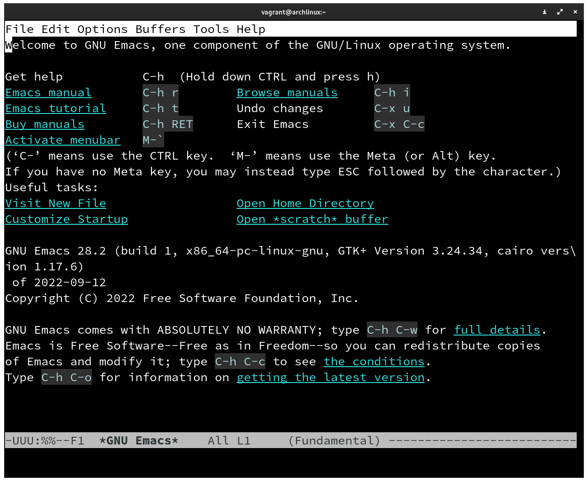
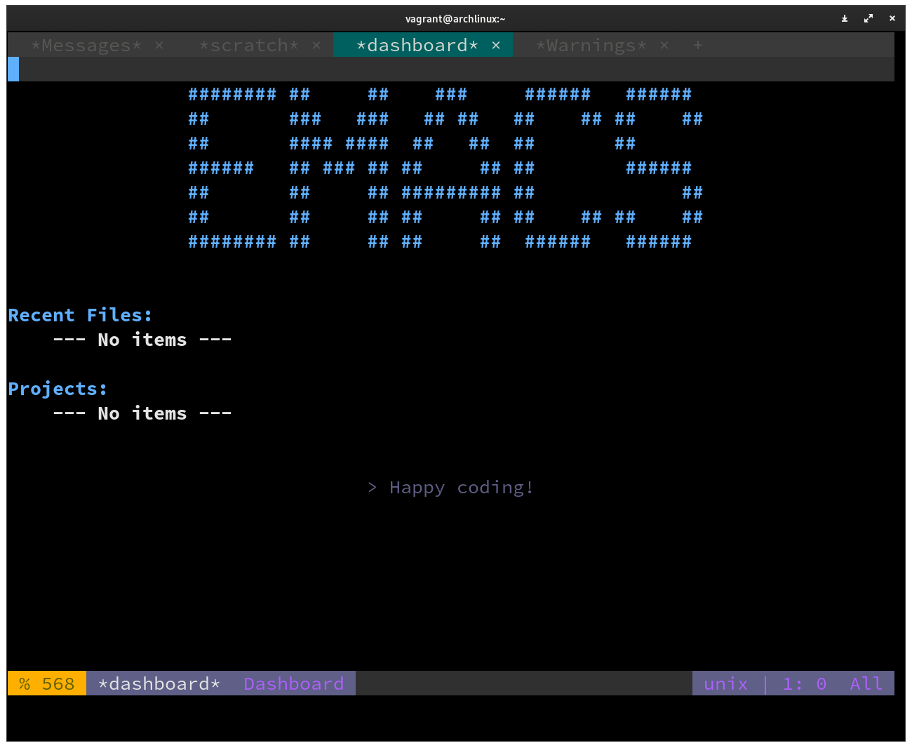

Ansible básico
Ansible é um grupo de ferramentas de código aberto construídas em python. O objetivo do Ansible é automatizar tarefas de diversas naturezas. Foi originalmente escrito por Michael DeHaan em 2012 e foi comprado pela Red Hat em 2015.
curiosidade
A palavra Ansible foi cunhada por Ursula K. Le Guin no livro O mundo de Rocannon
No livro existem diversos mundos e viajantes navegam na velocidade da luz. Ansible é um dispositivo que de comunicação instantânea pelo universo.
Automações
Quando falamos sobre Ansible, estamos falando sobre qualquer tipo de automação em máquinas. Alguns exemplos comuns são:
- Provisionamento de ambientes
- Gerenciamento de configuração
- Implantação de aplicativos
Entre outras coisas que podemos fazer com o ferramental
Provisionamento
Provisionamento é o processo de preparar um dispositivo para que ele possa entrar em produção. Não só exatamente a respeito do hardware, mas a preparação do sistema operacional, a escolha dos aplicativos instalados e etc...
Vimos nesse pequeno tutorial outra ferramenta de provisionamento, o Vagrant, que consegue montar a máquina virtual, fornecer a instalação do sistema operacional. A parte que envolve o ansible é mais referente a configuração dos pacotes instalados, a instalação dos softwares necessários para colocar uma máquina, geralmente um servidor, em funcionamento.
Gerenciamento de configuração
O gerenciamento de configuração é uma das partes do provisionamento, porém com foco e configurar as aplicações instaladas no sistema operacional para que ele se comporte como esperado em produção.
Implantação de aplicativos
Após toda a fase de instalação e configuração do ambiente e do sistema operacional, podemos colocar nossos aplicativos para serem executados nessas máquinas.
Um exemplo
Vamos pensar que fizemos uma aplicação web com Python. Para que essa aplicação seja usada em um servidor o servidor tem que atender diversos requisitos para executar a nossa aplicação. Independentemente da opção que você escolha para fazer o deploy dela.
De forma simples, temos que instalar o python na versão correta, fazer a instalação das bibliotecas necessárias, configurar um banco de dados. Fazer com que a aplicação e o banco de dados conversem.
Para que isso ocorra na nuvem, por exemplo, alguém deve ter provisionado um sistema base, como um ubuntu linux, geralmente usando algum sistema de virtualização. Como fizemos aqui com VirtualBox, porém em uma escala muito maior. Essa máquina tem que ter ao menos um serviço de SSH configurado para que possamos acessar esse computador do conforto da nossa casa.
É nesse contexto que o Ansible entra. Pegamos um sistema operacional limpo e iniciamos as nossas configurações e instalações para que nossa aplicação possa ser executada nesse servidor.
Instalação do ansible
Agora que temos duas máquinas virtuais criadas. Podemos começar a instalação do ansible. A primeira coisa que devemos fazer é acessar a máquina controladora. Para isso podemos usar o vagrant para nos ajudar:
vagrant up main # Iniciar a máquina controladora
vagrant ssh main # Acessar o console da máquina controladora via ssh
E isso deve retornar o console dá maquina controladora no usuário vagrant:

O ansible tem seus pacotes nos repositórios de quase todas as distribuições linux. Então você pode instalar no seu sistema como quiser.
Caso tenha dúvidas, o link da documentação
Formas de instalar em diversos sistemas.
sudo pacman -S ansible # Arch
sudo apt install ansible # Ubuntu
sudo dnf ansible # Familia Redhat
O ansible também pode ser instalado via pip, porém a instalação é bastante trabalhosa.
Como eu escolhi que a máquina main fosse um archlinux, vamos seguir a configuração com ele. O primeiro passo que devemos fazer é atualizar a máquina para garantir que tudo funcione como o esperado:
Caso a senha perguntada. A senha padrão criada pelas máquinas virtuais do vagrant é vagrant.
Agora podemos rodar o comando para instalar o ansible:
Se tudo ocorrer como o esperado, podemos perguntar a versão do ansible ao sistema:
[vagrant@archlinux ~]$ ansible --version
ansible [core 2.14.0]
config file = /etc/ansible/ansible.cfg
configured module search path = ['/home/vagrant/.ansible/plugins/modules', '/usr/share/ansible/plugins/modules']
ansible python module location = /usr/lib/python3.10/site-packages/ansible
ansible collection location = /home/vagrant/.ansible/collections:/usr/share/ansible/collections
executable location = /usr/bin/ansible
python version = 3.10.8 (main, Nov 1 2022, 14:18:21) [GCC 12.2.0] (/usr/bin/python)
jinja version = 3.1.2
libyaml = True
Ele nos disse que está na versão 3.10.8
Um pouco de ansible na prática
O ansible foi pensado para que pudéssemos automatizar uma tarefa de qualquer natureza. Para isso basta ter o ansible instalado na sua máquina e chamá-lo via linha de comando.
Instalação de um pacote
Por exemplo, vamos supor que no nosso ambiente é imprescindível que o editor de texto GNU/Emacs esteja instalado (para mim costuma ser). Então podemos usar o ansible para instalar o Emacs no nosso computador pessoal:
Com esse simples comando, temos o GNU/Emacs instalado nesse computador. Mas, o que realmente aconteceu aqui?
| Fragmento do comando | O que faz? |
|---|---|
| ansible | Invoca o ansible |
| localhost | Diz qual máquina será afetada pelo comando |
| -m | Diz que vamos chamar um módulo |
| package | package é o nome do módulo que vamos chamar |
| -a | Indica que vamos passar argumentos para o módulo |
| "name=emacs state=present" | Argumentos do módulo |
| -b | Diz ao Ansible que o comando será executado como root |
O módulo package é um dos muitos módulos ofertados pelo Ansible. Você pode ver uma lista completa aqui nesse link. O que dissemos, porém, é: "Modulo package garanta que o pacote emacs esteja presente no sistema em que for executado".
Podemos checar no terminal:

Caso tenha ficado preso
Para sair do emacs tecle Alt+x e em seguida digite kill-emacs e você terá saído do emacs 
Configuração do pacote
Embora o GNU/Emacs esteja instalado no meu sistema. Ele ainda não foi configurado da maneira que eu gostaria. Não tem as minhas cores, os meus atalhos e para isso precisamos baixar meu arquivo de configuração que está no github.com/dunossauro/dotfiles.
Para isso, podemos contar com outro módulo disponível no Ansible, o git. Então, vamos baixar as minhas configurações:
ansible localhost -m git \
-a "repo=https://github.com/dunossauro/dotfiles.git dest=config_files"
E com isso, obtivemos um erro:
localhost | FAILED! => {
"changed": false,
"msg": "Failed to find required executable \"git\" in paths: /usr/local/sbin:/usr/local/bin:/usr/bin:/sbin:/usr/sbin"
}
O ansible não conseguiu achar o git no nosso sistema, ele precisa ser instalado. Como já conhecemos o módulo package, será fácil. Só dizer ao módulo package que git deve estar present:
Após instalar o git, podemos testar nosso módulo de git outra vez:
ansible localhost -m git \
-a "repo=https://github.com/dunossauro/dotfiles.git dest=config_files"
localhost | CHANGED => {
"after": "8ff42a43ede85403b6b85c0bab9a1a4fe0d73544",
"before": null,
"changed": true
}
CHANGED, significa que uma ação foi executada e agora temos os arquivos no nosso computador na pasta dest que passamos como argumento.
Agora só falta colocar a nossa configuração no lugar certo. O diretório ~/.emacs.d/. Para isso podemos contar com outro módulo do copy:
ansible localhost -m copy -a "dest='/home/vagrant/' src='/home/vagrant/config_files/.emacs.d'"
Pode demorar um pouco para as configurações serem baixadas e instaladas da internet.
E temos o emacs com as minhas configurações:

Caso tenha ficado preso OUTRA VEZ
Para sair do emacs tecle Alt+x e em seguida digite kill-emacs e você terá saído do emacs